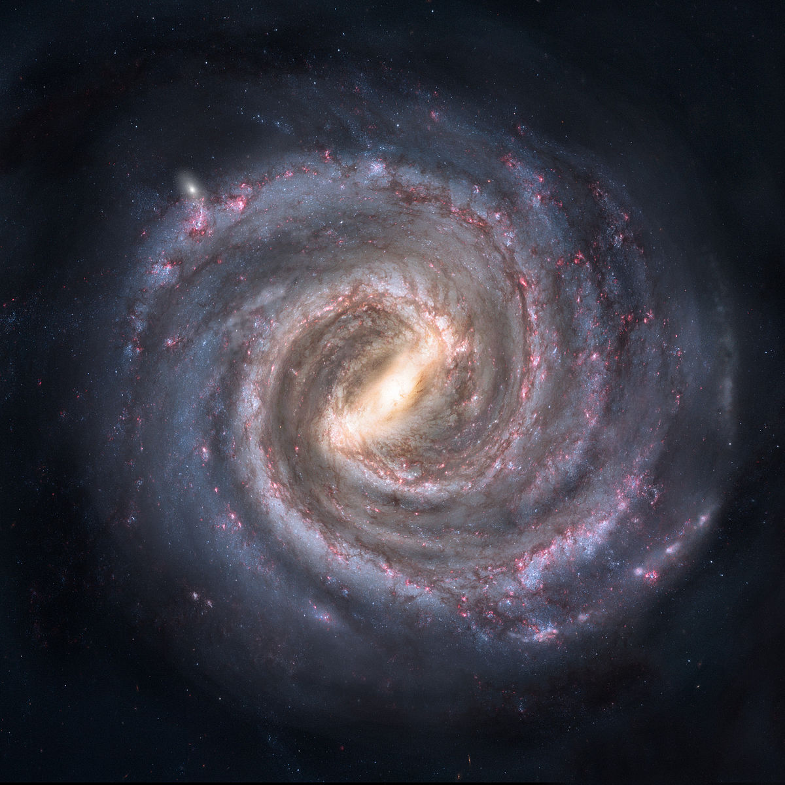

Nous habitons une petite planète tournant autour d'une étoile insignifiante, dans une minuscule région d'une énorme galaxie spirale: la Voie lactée. Celle-ci, née il y a plus de 10 milliards d'années, devrait vivre encore plusieurs milliards d'années.
La Voie lactée est une spirale barrée: elle ressemble aux soleils des feux d'artifice qui semblent déployer des bras incurvés en tournant sur eux-mêmes. Notre galaxie tourne aussi sur elle-même, et ses étoiles se déplacent autour de son centre. Notre Soleil, situé à environ 28000 années- lumière du centre, effectue un tour de la galaxie tous les 220 millions d'années. Les étoiles plus proches du centre mettent moins de temps.
Au centre de notre galaxie est tapi un trou noir contenant environ quatre millions de fois plus de matière que le Soleil. Sagittarius A* (ou SGR A*), ainsi appelé car il est situé dans la constellation du Sagittaire, est, pour le moment, assoupi : il engendre plusieurs milliards de fois moins d'énergie que les trous noirs géants des autres galaxies.
Lien vers Aller plus loin ... Lien vers la page d'acceil